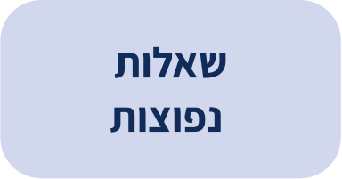
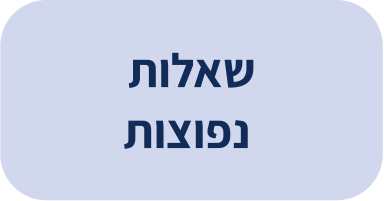
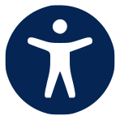
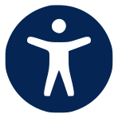
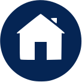
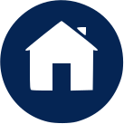

דגשים להתמודדות בחירום
לפניכם מספר דגשים והצעות שיעזרו לכם לפעול נכון בעת קבלת התרעה ולהיכנס למרחב המוגן בבטחה. במהלך ההכנות, מומלץ להסתייע בבני המשפחה, חברים או שכנים, ולהתייחס לכך כאל משימה משותפת.
וודאו שיש לכם דרך לקבל התרעות
בדקו מהו משך זמן הכניסה למרחב המוגן
בחרו את המרחב המוגן
תכננו את ההגעה למרחב המוגן
הכינו את המרחב המוגן
הכירו את ההנחיות בעת קבלת התרעה
התנהלות יומיומית בזמן חירום
דעו מה הפעולות שעליכם לבצע
שתפו בתחושות
היו פעילים
מספרי טלפון חשובים בחירום
בעת הכנת הציוד הנדרש לחירום, קיימת חשיבות גדולה להכין מראש רשימת טלפונים של ארגוני החירום, בני משפחה ושכנים. אל לנו להסתמך על הזיכרון של המכשיר הנייד או חיפוש המספרים ברשת - יש לרשום בכתב את מספרי הטלפון, לשים את הרשימה במקום בולט בפריטי הציוד לחירום ולוודא שיש אותה לכל אחד מבני המשפחה.
100 - משטרת ישראל(מספר לפנייה בסמס - 052-2020100)
101 - מד"א (מספר לפנייה בסמס או בוואצאפ - 052-7000101)
102 - כבאות והצלה (מספר לפנייה בסמס או בוואצאפ - 050-5960735)
103 - חברת חשמל (מספר לפנייה בסמס או בוואצאפ - 055-7000103)
104- פיקוד העורף (מספר לפנייה בסמס או בוואצאפ - 052-9104104)
לרשימת המספרים המלאה לחץ כאן
- גופים רלוונטיים נוספים באזור מגורינו
- דרכי תקשורת של בני המשפחה הקרובה
- בני משפחה רחוקים, שכנים ומכרים נוספים, שנקבע עימם מראש אפשרות ליצור קשר במקרה שלא נצליח ליצור קשר עם בני המשפחה הקרובה. חשוב לציין ערך מוסף אם קיים (דוד - חובש, שכן - שרברב, מכר - חשמלאי וכדומה).
סגור
ניסיון העבר מלמד כי במצבי חירום ומצוקה חשוב לערב את גופי החירום בשל מספר סיבות:
•זמן באירוע חירום הוא קריטי -כך למשל הגעה מהירה של סיוע רפואי תיטיב עם מצב הפצועים, והגעה מהירה של ניידת כיבוי תאפשר לכבות את השריפה מהר יותר.
•סיוע מרחוק - גופי החירום וההצלה יכולים לספק הדרכה חיונית מרחוק, למשל במתן סיוע לפצועים. עם זאת, מוטב תמיד להיות ערוכים להתמודדות עצמאית עם תרחישים אפשריים.
•ההתפתחות של אירועי חירום אינה ידועה-תיתכן הידרדרות מהירה שבעטייה לא נוכל ליצור קשר עם כוחות החירום וההצלה בתוך זמר קצר.
סגור
100 - משטרת ישראל (מספר לפנייה בסמס - 052-2020100)
101 - מד"א (מספר לפנייה בסמס או בוואצאפ - 052-7000101)
102 - כבאות והצלה (מספר לפנייה בסמס או בוואצאפ - 050-5960735)
103 - חברת חשמל (מספר לפנייה בסמס או בוואצאפ - 055-7000103)
104- פיקוד העורף (מספר לפנייה בסמס או בוואצאפ - 052-9104104)
105- הגנה על ילדים ברשת
106 / 107 / 108 / 109 - הרשות המקומית
110- מוקד המידע של משטרת ישראל
100 - משטרת ישראל
(מספר לפנייה בסמס - 052-2020100)
101 - מד"א
(מספר לפנייה בסמס או בוואצאפ - 052-7000101)
102 - כבאות והצלה
(מספר לפנייה בסמס או בוואצאפ - 050-5960735)
103 - חברת חשמל
(מספר לפנייה בסמס או בוואצאפ - 055-7000103)
104- פיקוד העורף
(מספר לפנייה בסמס או בוואצאפ - 052-9104104)
105- הגנה על ילדים ברשת
106 / 107 / 108 / 109 - הרשות המקומית
110- מוקד המידע של משטרת ישראל
חשיבות הכנת רשימת טלפונים


 


 


 
